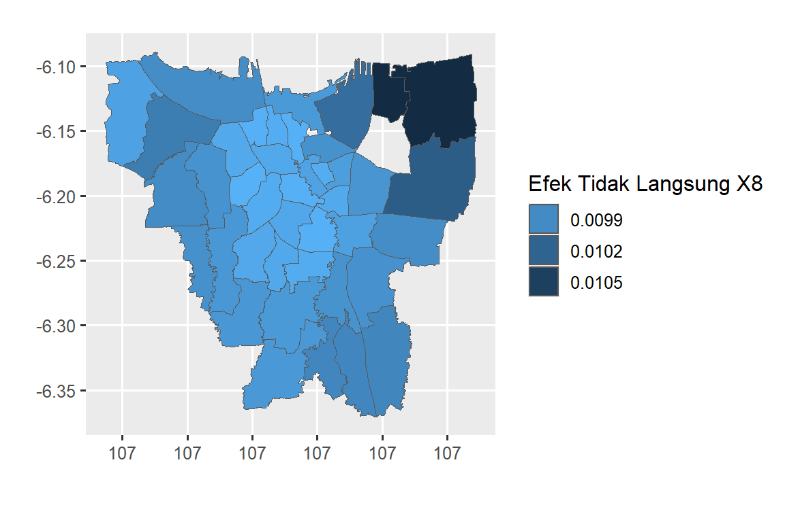

library(readxl) # Untuk import data format .xlsx
library(car) # Untuk menghitung nilai VIF
library(spdep) # Untuk pemodelan dependensi spasial
library(spatialreg) # Untuk pemodelan dependensi spasial
library(lmtest) # Untuk pengujian asumsi
library(DataExplorer) # Untuk visualisasi data
library(ggplot2) # Untuk visualisasi data
library(dplyr) # Untuk mengolah dataset2 Spasial Durbin Model
2.1 Data
Ilustrasi model spasial Durbin (Spatial Durbin Model/SDM) bersumber dari penelitian Ramadhani (2016). Kasus yang diteliti adalah tentang infeksi virus Dengue di kecamatan DKI Jakarta. Peubah yang digunakan dan sumber data selengkapnya disajikan pada Tabel 2.1. Data dan peta ilustrasi SDM tersedia pada tautan https://ipb.link/sdm.
| Peubah | Nama Peubah | Sumber |
|---|---|---|
| \(Y\) | Persentase penderita infeksi virus Dengue per kecamatan di DKI Jakarta tahun 2014 (%) | Dinas Kesehatan DKI Jakarta 2014 |
| \(X_1\) | Kepadatan penduduk per kecamatan di DKI Jakarta tahun 2014 (Jiwa/km) | Dinas Kependudukan dan Pencatatan Sipil DKI Jakarta 2014 |
| \(X_2\) | Rasio rumah sakit dengan jumlah penduduk per kecamatan di DKI Jakarta tahun 2014 (unit/100,000 jiwa) | Potensi Desa (PODES) BPS RI 2014 |
| \(X_3\) | Rasio puskesmas dengan jumlah penduduk per kecamatan di DKI Jakarta tahun 2014 (unit/100,000 jiwa) | Potensi Desa (PODES) BPS RI 2014 |
| \(X_4\) | Rasio poliklinik dengan jumlah penduduk per kecamatan di DKI Jakarta tahun 2014 (unit/100,000 jiwa) | Potensi Desa (PODES) BPS RI 2014 |
| \(X_5\) | Rasio tempat praktik dokter dengan jumlah penduduk per kecamatan di DKI Jakarta tahun 2014 (unit/100,000 jiwa) | Potensi Desa (PODES) BPS RI 2014 |
| \(X_6\) | Rasio apotek dengan jumlah penduduk per kecamatan di DKI Jakarta tahun 2014 (unit/100,000 jiwa) | Potensi Desa (PODES) BPS RI 2014 |
| \(X_7\) | Rasio keluarga yang tinggal di pemukiman kumuh dengan jumlah penduduk per kecamatan di DKI Jakarta tahun 2014 (unit/100,000 jiwa) | Potensi Desa (PODES) BPS RI 2014 |
| \(X_8\) | Rasio sekolah dasar dengan sekolah lain per kecamatan di DKI Jakarta tahun 2014 | Potensi Desa (PODES) BPS RI 2014 |
2.2 Metode Analisis
Langkah-langkah metode analisis data pada penelitian ini adalah sebagai berikut:
Melakukan eksplorasi data untuk memeriksa multikolinearitas pada prediktor yang digunakan dengan variance inflation factors (VIF), menentukan efek spasial secara eksploratif dengan peta tematik, dan memeriksa pencilan spasial dengan menggunakan diagram kotak garis dan plot pencaran Moran.
Membuat matriks pembobot spasial (\(W\)) dengan metode pembobotan Queen Contiguity.
-
Menguji efek spasial:
- depedensi spasial pada peubah respon dan sisaan dari model regresi linier berganda dengan indeks Moran.
- Menguji kehomogenan ragam sisaan model regresi klasik dengan uji Breusch-Pagan.
- Pemilihan model depedensi spasial menggunakan uji pengganda Lagrange (Lagrange Multiplier/LM).
Memeriksa efek depedensi spasial pada prediktor dengan indeks Moran.
Menduga parameter model regresi spasial sesuai hasil butir (3) dan (4).
Memeriksa asumsi pada model regresi spasial pada butir (5).
Mengukur kebaikan model dengan pseudo \(R^2\) dan AIC.
Interpretasi Model terbaik.
2.3 Tahapan Analisis Data dengan R
Tahap awal dalam pemodelan menggunakan R Studio adalah melakukan input data dan install package yang dibutuhkan untuk analisis.
2.3.1 Package
2.3.2 Input Data
#Set Lokasi File
#Input Data
DBD<-read_excel('data/3100_data.xlsx')
#
#Menyamakan tipe data dengan file shp
DBD$KODE2010 <- as.character(DBD$KODE2010)
#
#Rasio SD per 100 000 penduduk
DBD$PSD <- (DBD$SD/DBD$JUMLAHPENDUDUK)*100000
colnames(DBD)[c(23, 17, 18, 19, 20, 21, 22, 24)] <- c('X1','X2','X3','X4','X5','X6','X7','X8')
#
#Merapikan dataframe
DBD <- DBD[c('KODE2010', 'KECAMATAN', 'Y', 'X1', 'X2', 'X3', 'X4',
'X5', 'X6', 'X7', 'X8')]
#
#Input peta SHP
shp.jkt <- read_sf("data/shp/3100_kec.shp")
#
#Menggabungkan Data ke file SHP
gabung = inner_join(shp.jkt, DBD, by = "KODE2010")
longlat=st_coordinates(st_centroid(gabung))
#> Warning: st_centroid assumes attributes are constant over
#> geometries
gabung
#> Simple feature collection with 42 features and 17 fields
#> Geometry type: MULTIPOLYGON
#> Dimension: XY
#> Bounding box: xmin: 107 ymin: -6.37 xmax: 107 ymax: -6.09
#> CRS: NA
#> # A tibble: 42 × 18
#> PROVNO KABKOTNO KECNO KODE2010 PROVINSI KABKOT
#> <chr> <chr> <chr> <chr> <chr> <chr>
#> 1 31 75 010 3175010 DKI JAKARTA JAKARTA UTARA
#> 2 31 75 020 3175020 DKI JAKARTA JAKARTA UTARA
#> 3 31 75 030 3175030 DKI JAKARTA JAKARTA UTARA
#> 4 31 75 040 3175040 DKI JAKARTA JAKARTA UTARA
#> 5 31 75 050 3175050 DKI JAKARTA JAKARTA UTARA
#> 6 31 75 060 3175060 DKI JAKARTA JAKARTA UTARA
#> # ℹ 36 more rows
#> # ℹ 12 more variables: KECAMATAN.x <chr>, …2.3.3 Eksplorasi Data
Untuk mengetahui multikolinearitas pada prediktor digunakan yaitu VIF. Sintaks untuk menghitung VIF setiap prediktor sebagai berikut:
Pada output terlihat nilai VIF dari prediktor lebih kecil dari 10, sehingga disimpulkan tidak terdapat multikolinearitas pada prediktor.
Untuk mengetahui efek dependensi spasial pada persentase kasus DBD secara eksploratif dapat menggunakan peta pola tebaran data. Sintaks untuk membuat peta tematik sebagai berikut:
#Peta persentase kasus DBD
plotDBD = ggplot(data=gabung) +
geom_sf(aes(fill = cut(Y,
breaks = c(0.12, 0.18, 0.25, 0.40, 0.73, 1.54)))) +
geom_text(aes(longlat[,1],
longlat[,2],label=KECAMATAN.y),size=2) +
scale_fill_brewer("Presentase Kasus DBD",
palette = "RdPu",
labels = c("0.12% - 0.18%", "0.18% - 0.25%",
"0.25% - 0.40%", "0.40% - 0.73%", "0.73% - 1.54%"),
direction = 1) +
xlab("") +
ylab("")
plotDBDPada peta persentase kasus DBD (Gambar 2.1) terlihat kecamatan yang berdekatan memiliki warna yang sama. Warna pada peta tampak mengelompok.Perubahan warna antar kelompok mengikuti gradasi warna, yaitu kecamatan yang warna yang pekat berdekatan dengan warna yang lebih terang. Hal ini menunjukkan bahwa autokorelasi spasial pada persentase kasus DBD DKI Jakarta tahun 2014.
Pemeriksaan pencilan pada peubah Y menggunakan diagram kotak-garis. Sintaks untuk membuat diagram kotak-garis sebagai berikut:
#Membuat fungsi untuk menemukan outlier
findoutlier <- function(x) {
return(x < quantile(x, .25) - 1.5*IQR(x) | x > quantile(x, .75) + 1.5*IQR(x))
}
#
#Membuat kolom baru pada data DBD yang berisi Nama Kecamatan j
#jika nilai Y merupakan outlier, dan NA jika bukan outlier
DBD <- DBD %>%
mutate(outlier = ifelse(findoutlier(Y), KECAMATAN, NA))#Membuat boxplot
ggplot(DBD) + aes(x = Y, y = "") +
geom_boxplot(fill = "#EF562D") +
geom_text(aes(x = Y-0.95, y = 1.06, label = outlier),
na.rm=TRUE, hjust=-.2)+
xlim(c(0.1,0.8))+
labs(x = "Y", y ="") + theme_light()
#> Warning: Removed 1 row containing non-finite outside the scale range
#> (`stat_boxplot()`).Pada diagram kotak garis Gambar 2.2 terlihat bahwa kecamatan Kelapa Gading memiliki persentase penderita infeksi virus Dengue tertinggi dan merupakan amatan pencilan. Oleh karena itu, pemeriksaan efek depedensi spasial dan efek keheterogenan spasial dilakukan pada data semua kecamatan (Model 1) dan data tanpa Kecamatan Kelapa Gading (Model 2).
2.3.4 Matriks Pembobot Spasial
Sintaks untuk membuat matriks pembobot spasial langka ratu untuk Model 1 dan Model 2 sebagai berikut:
#Membentuk dataset tanpa pencilan
gabung2 <- gabung[gabung$KECAMATAN.y != "KELAPA GADING", ]
#
#Matriks pembobot spasial Model 1
sf_use_s2(FALSE)
#> Spherical geometry (s2) switched off
W.queen <- poly2nb(gabung, queen = T)
queen.listw <- nb2listw(W.queen, style = 'W', zero.policy = TRUE)
summary(queen.listw)
#> Characteristics of weights list object:
#> Neighbour list object:
#> Number of regions: 42
#> Number of nonzero links: 212
#> Percentage nonzero weights: 12
#> Average number of links: 5.05
#> Link number distribution:
#>
#> 2 3 4 5 6 7 8
#> 1 8 5 9 13 5 1
#> 1 least connected region:
#> 14 with 2 links
#> 1 most connected region:
#> 22 with 8 links
#>
#> Weights style: W
#> Weights constants summary:
#> n nn S0 S1 S2
#> W 42 1764 42 17.6 172#Matriks pembobot spasial Model 2
W.queen2 <- poly2nb(gabung2, queen = T)
queen.listw2 <- nb2listw(W.queen2, style = 'W', zero.policy = TRUE)
summary(queen.listw2)
#> Characteristics of weights list object:
#> Neighbour list object:
#> Number of regions: 41
#> Number of nonzero links: 198
#> Percentage nonzero weights: 11.8
#> Average number of links: 4.83
#> Link number distribution:
#>
#> 2 3 4 5 6 7 8
#> 3 8 3 11 12 3 1
#> 3 least connected regions:
#> 4 5 13 with 2 links
#> 1 most connected region:
#> 21 with 8 links
#>
#> Weights style: W
#> Weights constants summary:
#> n nn S0 S1 S2
#> W 41 1681 41 18.5 1672.3.5 Efek Spasial
Perhitungan indeks Moran dan uji efek heterogenitas spasial dilakukan pada Model 1 dan Model 2 dengan menggunakan sintaks sebagai berikut:
#Regresi untuk Model 1
Model1 <- lm(Y ~ X1 + X2 + X3 + X4 + X5 + X6 + X7 + X8, data = gabung)
#
#Pemeriksaan efek spasial Model 1
moran1 <- moran.test(gabung$Y, queen.listw)
moranerr1 <- lm.morantest(model, queen.listw)
bp1 <- bptest(model)
#
#Regresi untuk Model 2
model2 <- lm(Y ~ X1 + X2 + X3 + X4 + X5 + X6 + X7 + X8, data = gabung2)
#
#Pemeriksaan efek spasial Model 2
moran2 <- moran.test(gabung2$Y, queen.listw2)
moranerr2 <- lm.morantest(model2, queen.listw2)
bp2 <- bptest(model2)
#
#Ringkasan
IMoran <- data.frame(matrix(
c(
"Nilai p Uji BP",
"Indeks Moran Y",
"Nilai p Indeks Moran Y",
"Indeks Moran Sisaan",
"Nilai p Indeks Moran Sisaan",
round(bp1$p.value, 2),
round(moran1$estimate[1], 2),
round(moran1$p.value, 2),
round(moranerr1$estimate[1], 2),
round(moranerr1$p.value, 2),
round(bp2$p.value, 2),
round(moran2$estimate[1], 2),
round(moran2$p.value, 2),
round(moranerr2$estimate[1], 2),
round(moranerr2$p.value, 2)
),
byrow = F,
ncol = 3,
dimnames = list(1:5, c("Keterangan",
"Model 1", "Model 2"))
))
IMoran
#> Keterangan Model.1 Model.2
#> 1 Nilai p Uji BP 0 0.08
#> 2 Indeks Moran Y -0.01 0.38
#> 3 Nilai p Indeks Moran Y 0.44 0
#> 4 Indeks Moran Sisaan -0.13 -0.11
#> 5 Nilai p Indeks Moran Sisaan 0.8 0.69Berdasarkan hasil uji Indeks Moran dan Uji Breusch Pagan dapat disimpulkan bahwa Model 1 memiliki ragam yang heterogen. Untuk Model 2 hanya memiliki autokorelasi spasial pada peubah responnya. Pada ilustrasi ini hanya dilakukan pembahasan untuk Model 2.
Pengujian efek dependensi spasial menggunakan uji Lagrange Multiplier dengan sintaks sebagai berikut:
#Uji LM dan RLM
spasial2<-lm.RStests(model2, queen.listw2, test=c('LMlag','LMerr','RLMlag', 'RLMerr','SARMA'))
summary(spasial2)
#> Rao's score (a.k.a Lagrange multiplier) diagnostics for
#> spatial dependence
#> data:
#> model: lm(formula = Y ~ X1 + X2 + X3 + X4 + X5 + X6 + X7 +
#> X8, data = gabung2)
#> test weights: queen.listw2
#>
#> statistic parameter p.value
#> RSerr 1.053 1 0.305
#> RSlag 0.266 1 0.606
#> adjRSerr 4.901 1 0.027 *
#> adjRSlag 4.115 1 0.043 *
#> SARMA 5.167 2 0.075 .
#> ---
#> Signif. codes: 0 '***' 0.001 '**' 0.01 '*' 0.05 '.' 0.1 ' ' 1Pada output uji efek spasial terlihat nilai-p dari uji RLMlag dan RLMerr bernilai lebih kecil dari α=0.05 dan SARMA lebih besar dari α=0.05. Berdasarkan hasil uji LM ini maka model yang sesuai untuk data adalah SAR.
2.3.6 Efek dependensi spasial pada prediktor
Penentuan prediktor yang mempunyai autokorelasi spasial menggunakan indeks Moran dengan sintaks sebagai berikut:
#Uji Moran pada prediktor
moranx1 <- moran.test(gabung2$X1, queen.listw2)
moranx2 <- moran.test(gabung2$X2, queen.listw2)
moranx3 <- moran.test(gabung2$X3, queen.listw2)
moranx4 <- moran.test(gabung2$X4, queen.listw2)
moranx5 <- moran.test(gabung2$X5, queen.listw2)
moranx6 <- moran.test(gabung2$X6, queen.listw2)
moranx7 <- moran.test(gabung2$X7, queen.listw2)
moranx8 <- moran.test(gabung2$X8, queen.listw2)
MoranX <- data.frame(matrix(
c(
"X1",
"X2",
"X3",
"X4",
"X5",
"X6",
"X7",
"X8",
round(moranx1$estimate[1], 2),
round(moranx2$estimate[1], 2),
round(moranx3$estimate[1], 2),
round(moranx4$estimate[1], 2),
round(moranx5$estimate[1], 2),
round(moranx6$estimate[1], 2),
round(moranx7$estimate[1], 2),
round(moranx8$estimate[1], 2),
round(moranx1$p.value, 2),
round(moranx2$p.value, 2),
round(moranx3$p.value, 2),
round(moranx4$p.value, 2),
round(moranx5$p.value, 2),
round(moranx6$p.value, 2),
round(moranx7$p.value, 2),
round(moranx8$p.value, 2)
),
byrow = F,
ncol = 3,
dimnames = list(1:8,
c("Peubah", "Nilai Indeks Moran", "Nilai-p"))
))
MoranX
#> Peubah Nilai.Indeks.Moran Nilai.p
#> 1 X1 0.39 0
#> 2 X2 0.11 0.07
#> 3 X3 0.29 0
#> 4 X4 0.1 0.11
#> 5 X5 0.32 0
#> 6 X6 0.05 0.23
#> 7 X7 0.12 0.06
#> 8 X8 0.51 0Pada output indeks Moran tampak peubah X1, X3, X5, dan X8 memiliki autokorelasi spasial yang nyata. Oleh karena itu, pada model spasial perlu ditambahkan lag-prediktor (WX). Berdasarkan hasil uji LM dan uji indeks Moran pada prediktor, maka model spasial yang dipilih adalah SAR dan SDM.
2.3.7 Pendugaan parameter model SAR dan SDM
Pendugaan parameter model SAR menggunakan sintaks sebagai berikut:
#Model SAR
modelSAR<-lagsarlm(model2,queen.listw2,data=gabung2)
summary(modelSAR,Nagelkerke=T)
#>
#> Call:
#> lagsarlm(formula = model2, data = gabung2, listw = queen.listw2)
#>
#> Residuals:
#> Min 1Q Median 3Q Max
#> -0.166406 -0.067211 -0.018407 0.056343 0.228568
#>
#> Type: lag
#> Coefficients: (asymptotic standard errors)
#> Estimate Std. Error z value Pr(>|z|)
#> (Intercept) -1.7862e-02 7.9309e-02 -0.2252 0.821810
#> X1 -7.7444e-07 1.7298e-06 -0.4477 0.654371
#> X2 -1.0409e-02 6.5021e-03 -1.6009 0.109395
#> X3 -1.2592e-02 1.1777e-02 -1.0692 0.284969
#> X4 -9.7550e-04 3.0611e-03 -0.3187 0.749971
#> X5 5.3441e-04 1.1327e-03 0.4718 0.637057
#> X6 8.0145e-03 2.5653e-03 3.1242 0.001783
#> X7 -1.4708e-05 5.7398e-06 -2.5624 0.010396
#> X8 6.0165e-03 1.8904e-03 3.1827 0.001459
#>
#> Rho: 0.0843, LR test value: 0.246, p-value: 0.62004
#> Asymptotic standard error: 0.175
#> z-value: 0.481, p-value: 0.63032
#> Wald statistic: 0.232, p-value: 0.63032
#>
#> Log likelihood: 40.5 for lag model
#> ML residual variance (sigma squared): 0.00809, (sigma: 0.0899)
#> Nagelkerke pseudo-R-squared: 0.676
#> Number of observations: 41
#> Number of parameters estimated: 11
#> AIC: -59.1, (AIC for lm: -60.8)
#> LM test for residual autocorrelation
#> test value: 4.75, p-value: 0.029271Pemodelan SDM dengan lag-prediktor X1, X3, X5, dan X8 menggunakan sintaks berikut:
#Model SDM
modelSDM <- lagsarlm(model2, queen.listw2, data = gabung2,
Durbin = ~X1+X3+X5+X8)
summary(modelSDM,Nagelkerke=T)
#>
#> Call:
#> lagsarlm(formula = model2, data = gabung2, listw = queen.listw2,
#> Durbin = ~X1 + X3 + X5 + X8)
#>
#> Residuals:
#> Min 1Q Median 3Q Max
#> -0.1283448 -0.0535020 -0.0032732 0.0375121 0.2282186
#>
#> Type: mixed
#> Coefficients: (asymptotic standard errors)
#> Estimate Std. Error z value Pr(>|z|)
#> (Intercept) -3.1013e-01 1.2316e-01 -2.5181 0.0117992
#> X1 -1.4365e-06 1.8076e-06 -0.7947 0.4267903
#> X2 -1.0415e-02 5.9513e-03 -1.7501 0.0801063
#> X3 -2.6781e-03 1.0746e-02 -0.2492 0.8031808
#> X4 -3.1492e-03 2.7366e-03 -1.1508 0.2498172
#> X5 3.9221e-04 1.0200e-03 0.3845 0.7005954
#> X6 6.5894e-03 2.3690e-03 2.7815 0.0054104
#> X7 -9.6902e-06 5.5183e-06 -1.7560 0.0790883
#> X8 3.8520e-03 1.8732e-03 2.0564 0.0397434
#> lag.X1 6.1233e-06 3.7831e-06 1.6186 0.1055315
#> lag.X3 -2.2872e-02 2.0222e-02 -1.1310 0.2580552
#> lag.X5 -3.8736e-03 1.9671e-03 -1.9692 0.0489277
#> lag.X8 1.3069e-02 3.9530e-03 3.3062 0.0009458
#>
#> Rho: -0.309, LR test value: 1.93, p-value: 0.16502
#> Asymptotic standard error: 0.222
#> z-value: -1.39, p-value: 0.16353
#> Wald statistic: 1.94, p-value: 0.16353
#>
#> Log likelihood: 46.8 for mixed model
#> ML residual variance (sigma squared): 0.00586, (sigma: 0.0766)
#> Nagelkerke pseudo-R-squared: 0.761
#> Number of observations: 41
#> Number of parameters estimated: 15
#> AIC: -63.5, (AIC for lm: -63.6)
#> LM test for residual autocorrelation
#> test value: 0.361, p-value: 0.548212.3.8 Pemeriksaan asumsi model regresi spasial
Pemeriksaan asumsi untuk Model SAR dan SDM yang terdiri dari kenormalan sisaan, homogenitas ragam, dan kebebasan sisan menggunakan sintaks sebagai berikut:
#Asumsi model SAR
sisaan.sar<-resid(modelSAR)
normSAR <- shapiro.test(sisaan.sar)
heteSAR <- bptest.Sarlm(modelSAR)
autoSAR <- moran.test(sisaan.sar, listw = queen.listw2)
asumsiSAR <- data.frame(matrix(c("Kenormalan",
"Kehomogenan ragam", "Autokorelasi",
round(normSAR$p.value, 2),
round(heteSAR$p.value, 2),
round(autoSAR$p.value, 2)),
byrow = F, ncol = 2, dimnames = list(1:3,
c("Uji", "p-value"))))
asumsiSAR$Kesimpulan <- ifelse(asumsiSAR$p.value > 0.05, "Terpenuhi", "Tidak Terpenuhi")
asumsiSAR
#> Uji p.value Kesimpulan
#> 1 Kenormalan 0.76 Terpenuhi
#> 2 Kehomogenan ragam 0.05 Tidak Terpenuhi
#> 3 Autokorelasi 0.89 Terpenuhi#Asumsi model SDM
sisaan.SDM<-resid(modelSDM)
normSDM <- shapiro.test(sisaan.SDM)
heteSDM <- bptest.Sarlm(modelSDM)
autoSDM <- moran.test(sisaan.SDM, listw = queen.listw2)
asumsiSDM <- data.frame(matrix(c("Kenormalan",
"Kehomogenan ragam", "Autokorelasi",
round(normSDM$p.value, 2),
round(heteSDM$p.value, 2),
round(autoSDM$p.value, 2)),
byrow = F, ncol = 2, dimnames = list(1:3,
c("Uji", "p-value"))))
asumsiSDM$Kesimpulan <- ifelse(asumsiSDM$p.value > 0.05, "Terpenuhi", "Tidak Terpenuhi")
asumsiSDM
#> Uji p.value Kesimpulan
#> 1 Kenormalan 0.33 Terpenuhi
#> 2 Kehomogenan ragam 0.26 Terpenuhi
#> 3 Autokorelasi 0.5 TerpenuhiBerdasarkan hasil pemeriksaan asumsi pada sisaan, model SDM memenuhi seluruh asumsi.
2.3.9 Evaluasi kebaikan model
Evaluasi kebaikan model menggunakan nilai AIC dan Pseudo R-Square dengan sintaks sebagai berikut:
#Nilai AIC dan Pseudo-R2
sumSAR <- summary(modelSAR, Nagelkerke=T)
sumSDM <- summary(modelSDM, Nagelkerke=T)
evaluasi <- data.frame(matrix(
c("Model SAR", "Model SDM",
round(AIC(modelSAR),2),
round(AIC(modelSDM),2),
round(sumSAR$NK,2), round(sumSDM$NK,2)),
byrow = F, nrow = 2, ncol = 3))
colnames(evaluasi) <- c("Model", "AIC", "Pseudo-R2")
evaluasi
#> Model AIC Pseudo-R2
#> 1 Model SAR -59.09 0.68
#> 2 Model SDM -63.53 0.76Pada output terlihat model SDM dibandingkan SAR mempunyai nilai AIC yang lebih rendah dan nilai Pseudo R-Square yang lebih tinggi.
Pemilihan model yang lebih efisien antara SAR dan SDM dapat menggunakan uji Likelihood Ratio (LR). Uji LR antara SAR dan SDM digunakan untuk mengetahui efek penambahan lag-X pada SAR. Sintaks untuk uji LR sebagai berikut:
#Uji LR SAR dan SDM
LR.Sarlm(modelSAR, modelSDM)
#>
#> Likelihood ratio for spatial linear models
#>
#> data:
#> Likelihood ratio = -12, df = 4, p-value = 0.01
#> sample estimates:
#> Log likelihood of modelSAR Log likelihood of modelSDM
#> 40.5 46.8Pada output uji LR terlihat model SDM lebih efisien dibandingkan model SAR. Model SDM memenuhi semua asumsi pada sisaan, sehingga model SDM merupakan model yang terbaik untuk data infeksi virus Dengue di Jakarta.
2.3.10 Interpretasi model terbaik
Interpretasi model SDM dilakukan dengan menentukan nilai efek marginal dari setiap prediktor dengan sintaks sebagai berikut:
#Efek marginal
options(scipen = 2, digits = 2) # Untuk mengatur digit desimal dari output yang akan dikeluarkan
impacts(modelSDM, listw = queen.listw2)
#> Impact measures (mixed, exact):
#> Direct Indirect Total
#> X1 -0.0000019 0.0000054 0.0000036
#> X2 -0.0106211 0.0026671 -0.0079539
#> X3 -0.0012705 -0.0182413 -0.0195118
#> X4 -0.0032115 0.0008065 -0.0024050
#> X5 0.0006473 -0.0033060 -0.0026587
#> X6 0.0067197 -0.0016874 0.0050322
#> X7 -0.0000099 0.0000025 -0.0000074
#> X8 0.0030936 0.0098290 0.0129226Berdasarkan output efek marginal terlihat bahwa TE positif tertinggi (0.0129226) berasal dari peubah rasio sekolah dasar per 100.000 penduduk (X8), sedangkan TE negatif terkecil (-0.0195118) berasal dari peubah rasio puskesmas per 100.000 penduduk (X3). TE peubah rasio sekolah dasar per 100.000 penduduk (X8) sebesar 0.0129226, artinya kenaikan satu persen X8 akan menaikkan sebanyak 0.0129226 persen kasus infeksi virus Dengue. DE X8 merupakan total efek dari perubahan pada X8 di suatu lokasi berdampak pada lokasi yang sama sebesar 0.0030936. IE X8 sebesar 0.0098290 merupakan total efek dari perubahan satu persen X8 di di suatu lokasi pada lokasi lainnya.
Efek marginal dapat diuraikan berdasarkan daerah dan peubahnya. Berikut sintaks yang dapat digunakan untuk menguraikan efek marginal untuk prediktor X8:
#Membuat Matriks S untuk Peubah X8
rho <- modelSDM$rho
beta_hat <- coef(modelSDM)[-c(1,11,12,13,14)]
A <- invIrW(queen.listw2, rho = rho) # (I - rho*W)^{-1}
b8 <- as.numeric(beta_hat[9])
i <- diag(1, ncol = 41, nrow = 41)
wgamma <- listw2mat(queen.listw2) %*% (coef(modelSDM)[14] * i)
mat_s <- A %*% (b8 * i + wgamma)
#Efek langsung
de <- diag(mat_s)
#Efek tidak langsung
diag(mat_s) <- 0
ie <- rowSums(mat_s)
#Efek total
te <- de+ieEfek marginal dari prediktor X1 untuk setiap kecamatan DKI Jakarta berbeda-beda. Untuk memudahkan penyajian efek marginal disajikan dalam bentuk peta dengan sintaks sebagai berikut:
#Menggabungkan hasil uraian efek dengan data peta
gabung2$de <- de
gabung2$ie <- ie
gabung2$te <- te
#Plot Efek Langsung X8
ggplot(gabung2) + aes(fill = de) + geom_sf(size = 0.05) +
scale_fill_continuous("Efek Langsung X8", trans = 'reverse',
guide = guide_legend(reverse = F))+ xlab("") + ylab("")Pada peta efek langsung terlihat mayoritas kecamatan di DKI Jakarta berwarna biru gelap (nilai DE 0.028-0.032), kecuali kecamatan Koja, Cilincing dan Cakung yang berwarna biru muda (nilai DE 0.022).
#Plot Efek Tidak Langsung X8
ggplot(gabung2) + aes(fill = ie) + geom_sf(size = 0.05) +
scale_fill_continuous("Efek Tidak Langsung X8",
trans = 'reverse', guide = guide_legend(reverse = F))+
xlab("") + ylab("")
Pada peta efek langsung terlihat mayoritas kecamatan di DKI Jakarta berwarna biru muda (nilai DE 0.0099-0.0102), kecuali kecamatan Koja, Cilincing dan Cakung yang berwarna biru tua (nilai DE 0.0105). Peta DE dan peta IE tampak merupakan kebalikan satu sama lain.
#Plot Total Efek X8
ggplot(gabung2) + aes(fill = te) + geom_sf(size = 0.05) +
scale_fill_continuous("Total Efek X8",
guide = guide_legend(reverse = F))+ xlab("") + ylab("")
Untuk menentukan efek besarnya perubahan Y di kecamatan DKI Jakarta akibat kenaikan nilai prediktor X8 di Kecamatan Kalideres sebesar 1% dapat dihitung menggunakan sintaks sebagai berikut:
#Nilai dugaan Y sebelum ada kenaikan nilai
DBD_up <- DBD[DBD$KECAMATAN != 'KELAPA GADING',]
X <- cbind(1, DBD_up[,4:11])
gamma <- matrix(coef(modelSDM)[11:14], nrow = 4)
X_2 <- DBD_up[, c('X1', 'X3', 'X5', 'X8')]
X_2 <- as.matrix(X_2)
matw <- listw2mat(queen.listw2)
y_hat_pre <- A %*% (crossprod(t(X), beta_hat) + (matw %*% X_2 %*% gamma))
#Data Kec. Kalideres naikdengan kenaikan nilai
DBD_new <- DBD_up
DBD_new[DBD_new$KECAMATAN == 'KALI DERES', "X8"] <- 72
#Nilai dugaan Y setelah ada kenaikan nilai
X_d <- cbind(1, DBD_new[,4:11])
X_2_d <- DBD_new[, c('X1', 'X3', 'X5', 'X8')]
X_2_d <- as.matrix(X_2_d)
y_hat_post <- A %*% (crossprod(t(X_d), beta_hat) +
(matw %*% X_2_d %*% gamma))
#Perubahan nilai
delta_y <- y_hat_post - y_hat_pre
DBD_new$delta_y <- delta_y
#Plot perubahan nilai
gabung.new = inner_join(shp.jkt, DBD_new, by = "KODE2010")
ggplot(gabung.new) +
aes(fill = delta_y) +
geom_sf(size = 0.05) +
scale_fill_continuous("Perubahan Nilai",trans = 'reverse',
guide = guide_legend(reverse = F))+
xlab("") +
ylab("")Pada peta perubahan nilai Y (kasus DBD) terlihat Kecamatan Kalideres (warna biru pekat) mempunyai kenaikan kasus DBD terbesar dibandingkan kecamatan lainnya di DKI Jakarta. Pada peta terlihat tetangga Kecamatan Kalideres tidak mengalami perubahan kasus DBD. Beberapa kecamatan yang letaknya jauh dari Kecamatan Kalideres tampak berwarna biru tua, hal ini karena adanya efek dependensi pada prediktor X8.